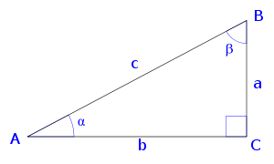
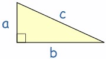
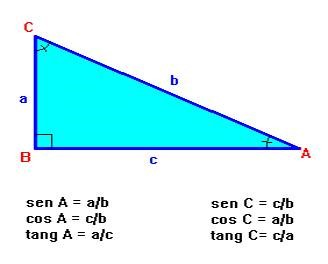
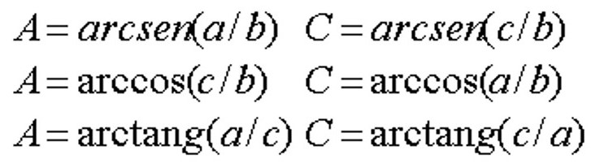

En geometría, se denomina triángulo rectángulo a cualquier triángulo con un ángulo recto, es decir, un ángulo de 90 grados. Las razones entre las longitudes de los lados de un triángulo rectángulo es un enfoque de la trigonometría plana. En particular, en un triángulo rectángulo, se cumple el llamado teorema de Pitágoras ya conocido por los babilonios.
Como en todos los polígonos, sus vértices se designan con letras mayúsculas en sentido contrario al de las agujas del reloj.
A los lados se les nombra con la misma letra en minúscula del vértice opuesto.
Y sus ángulos interiores se definen con las letras griegas α (Alfa), β (Beta), γ (Gamma).
La suma de los ángulos interiores de un triángulo siempre es 180º. Un triángulo no puede tener más de un ángulo recto u obtuso. Cualquier lado de un triángulo siempre es menor a la suma de los otros dos lados, pero mayor que su diferencia.
Este teorema, enunciado por el matemático griego Pitágoras en el siglo V a.C., es uno de los resultados más conocidos e importantes de la geometría y posee gran cantidad de aplicaciones tanto en distintas partes de las matemáticas como en situaciones de la vida diaria.
El teorema se aplica a los triángulos rectángulos, y dice lo siguiente:
"En un triángulo rectángulo, el cuadrado de la hipotenusa es igual a la suma de los cuadrados de los catetos"
Si llamamos "a" a la hipotenusa de un triángulo rectángulo y "b", "c" a los catetos, se verifica que:
el cuadrado de a (a²) más el cuadrado de b () es igual al cuadrado de c (c²): a² + b² = c²
A los grupos de tres números "a", "b" y "c" que verifican a² + b² = c² les llama "ternas pitagóricas".
La trigonometría es la rama de las matemáticas que estudia la relación entre los lados y ángulos de los triángulos. Se ocupa, por tanto, de las funciones asociadas a los ángulos, denominadas funciones trigonométricas (también pueden denominarse funciones circulares): seno, coseno, tangente.
Las razones trigonométricas de un ángulo α son las razones obtenidas entre los tres lados de un triángulo rectángulo. Es decir, la comparación por su cociente de sus tres lados a, b y c. Sea α uno de los ángulos agudos del triángulo rectángulo.
• El seno de un ángulo α se define como la razón entre el cateto opuesto (a) y la hipotenusa (c).
• El coseno se define como la razón entre el cateto contiguo o cateto adyacente (b) y la hipotenusa (c).
• La tangente es la razón entre el cateto opuesto (a) y el cateto contiguo o cateto adyacente (b).
Las razones trigonométricas recíprocas de un ángulo α se obtienen como razones entre los tres lados de un triángulo rectángulo, siendo α uno de sus ángulos agudos.
• Cosecante de α. Se define como la razón entre la hipotenusa (c) y el cateto opuesto (a):
• Secante de α. Se define como la razón entre la hipotenusa (c) y el cateto contiguo o cateto adyacente (b):
• Cotangente de α. Se define como la razón entre el cateto contiguo o cateto adyacente (b) y el cateto opuesto (a):
Resolver un triángulo consiste en calcular seis elementos: los tres lados y los tres ángulos. Para ello necesitamos conocer tres de estos seis elementos y uno de los datos por lo menos sea un lado. Si el triángulo es rectángulo (un ángulo es 90º) basta conocer dos de sus elementos, uno de los cuales debe ser un lado.
Se llama razón trigonométrica de un ángulo agudo a cada uno de los cocientes que se pueden establecer entre los lados de un triángulo rectángulo cualquiera. Las razones trigonométricas fundamentales (seno, coseno y tangente) relacionan los ángulos agudos y los lados de un triángulo rectángulo de la siguiente forma:
Los lados de un triángulo rectángulo verifican el teorema de Pitágoras (explicado más arriba)
Para hallar los ángulos se utilizan las inversas de seno (arco seno), coseno (arco coseno) y tangente (arco tangente) de la siguiente forma:  Donde A y C son ángulos opuestos a sus lados (a y c) Utilizando dichas relaciones se pueden calcular los elementos desconocidos a partir de los conocidos.